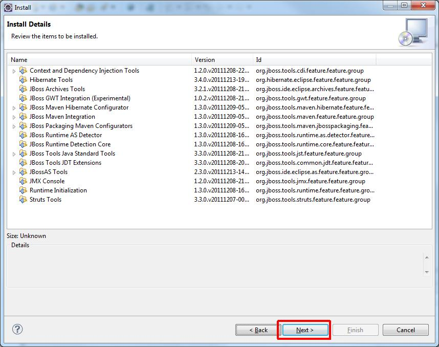

Installation of JBoss Tools plugin into Eclipse
In order to handle our JBoss from Eclipse first we need to install JBoss Tools plug-in.
- Help > Install New Software...

- Enter "http://download.jboss.org/jbosstools/updates/development/indigo/" from the drop-down list next
to the "Add..." button, and press enter while the cursor is in the edit box. Wait until it fetches the repository.
- In the checklist view select the followings (probably best from the top Abridged JBoss Tools 3.3 group):
- Context and Dependency Injection Tools
- Hibernate Tools
- JBoss Archive Tools
- JBoss Maven Hibernate Configurator
- JBoss Maven Integration
- JBoss Runtime AS Detector
- JBoss Runtime Detection Core
- JBoss Tools Java Standard Tools
- JBoss Tools JDT Extensions
- JBossAS Tools
- JMX Console
- Runtime Initialization
- Struts Tools
- JBoss GWT Integration (Experimental)
- JBoss Packaging Maven Configurators
Then click next.
- Wait while dependencies are calculated.
Click Next.

- Select "I accept the terms...", Finish.
- Wait for the installation procedure, select OK when asked and finally select "Restart Now" at the end.